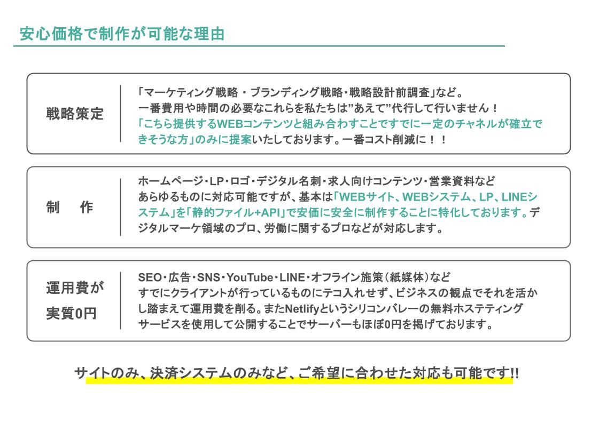
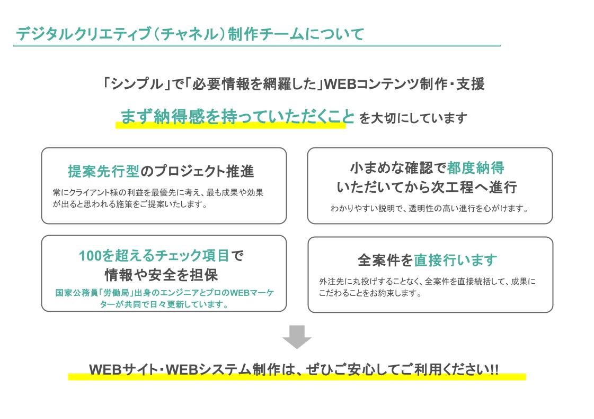
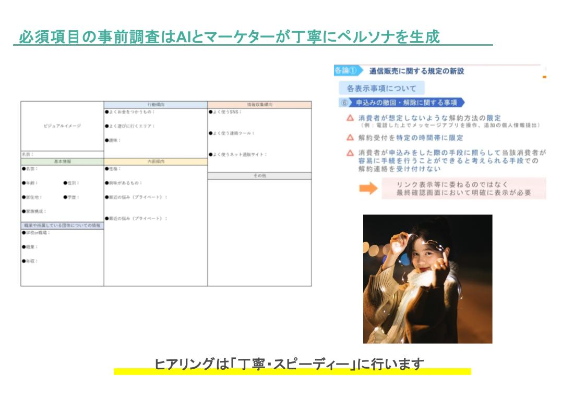
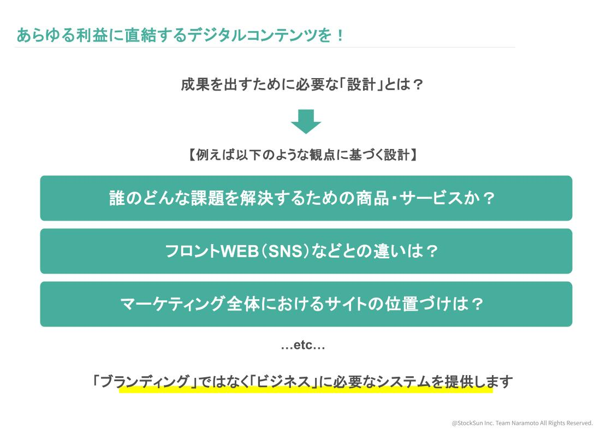
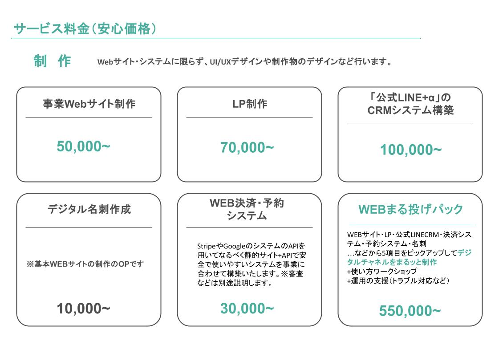

結局Antiiは「なに」が「いくら」でできるの？
少数精鋭のプロが生成AIと知識を用いて、あなたの事業に必要な「ターゲットに向けて」「安全・丁寧・わかりやすく」
「ちょうど良くて安価な」WEBサイト・システムを提供します。
Antiiは遡ること2017年よりWEBメディア運営、イベント事業、教育業などからスタートしました。
コロナ禍以降は教育事業のWEB決済システムを自社で運営したり、運用していたSNSアカウントを通じ、
あらゆる企業さまから直接PRの依頼をいただく機会が非常に多く増え、WEBマーケティングの受託を開始しました。
そんな中で、取引がすぐに終わってしまう構造の「WEB・PR」の事業に危機感を持ち、またクライアントの成果をより
確度高く成立させるために
・誰かのKPIを一時的に達成するための単発で終わるPRではなく、
その一歩先をいく中期的に持続可能なWEB全体を通したチャネルを作ること
・DRMマーケティング（ダイレクトレスポンスマーケティング）をWEBフォームや
LINEを使用して簡単に安価にできるチャネルを持ってもらうこと
・事業のWEB担当者の育成支援、定期的なワークショップやレッスンや壁打ち相手になること
そういったことを意識してご提案させていただく機会を増やしていくうちに、
ただのPR事業ではなく、現在のWEBサポート事業と社会人向けの教育事業の２軸サービスのスタートとなりました。
代表の考え方のもと「〇〇コンサルティング」と名乗りたくないため、
Antiiはあくまで「お客様のWEB領域の事業推進の併走・サポート」という立ち位置で地に足をつけ、
事業を日々行っております。
WEBサイトやSNSからECのリニューアルといった戦略〜制作業務をはじめ、
書面やデスクトップで管理していた業務課題をオープンソースのクラウドで実現するような業務効率化。
そしてアナログ事業をデジタル化したい、もしくはWEBでのマネタイズなど、
WEBの制作や開発業務にとどまらず、クライントの抱える課題の解決、
目指すべきゴールに導くためにデジタル領域において、幅広く支援しています。
2021年頃より早期に生成AIを積極的に活用した業務をスタートし、同時期に「副業人材」のデジタル事業参加の場を用意して、
そのサポートが可能な事業者同士のエコシステムの開発にも力を入れております。また個人/中小企業向けの
「脱・動的WEBシステム」を掲げており、生成AIや静的サイトジェネレーターにて
「事業に合ったちょうど良い」静的サイトやAPI連携システムでの成果物作成にも力を入れております。
パートナーには、主婦から身銭を切りECチャンネルを成功させた企業の代表、元国家公務員「労働局」で長年勤めたのち
WEBエンジニアになった者、DX設計のできる上場企業クリエイティブディレクターの副業人材など、素晴らしい
メンバーに恵まれており、定期的に勉強会などを開き、「独自の生成AIとWEBクリエイティブ」のアセットを蓄積しております。
より安価で安全にスピーディーにクライアントさまをサポートできるよう日々精進してまいります。
「取引企業さま・事業者さま一覧」
※SNS-PR、ECグッズ販売、DX設計、デジタルチャネル制作、パートナーシップなど
株式会社ZOZOTOWN/CatLog（Lab.inc）/株式会社YUIDEA/株式会社マテリアル/株式会社アクアスター/株式会社Philos/
Tomofun株式会社/株式会社Haru/株式会社レッグス/株式会社RABO/「はぐはぐ/育児漫画」合同会社MAWARU/
「huglee」EC/OFYOU（イースラー）/tj@ピアノ/ミーチ・クリエイティブ..etc
では、わたしたちが「いま」具体的にどのような事業をご提供できるか書いております。





WEBサイトやシステムを「ターゲットに向けて」「安全・丁寧・わかりやすく」作ります
たとえばこのページは「PCで見ている」「サービスのWEB担当者や個人事業主」に向けて作っております。なので
スマホでの表示は最低限、横長画像が100%表示される状態にしていますが、縦長に変動して動いたりはしません。
また、わたしのデジタル名刺やSNSを通じてきた人3割程度、その他のほとんどが代理店及び代理事業者さま経由での
ページ導入なため、SEO対策もこのページは一切せず、サイトのindexページ（トップ）
に関してはあえて「noindex」というGoogle検索に引っかからないような作り方をしています。
また、静的ファイル+API+NETLIFY（静的サイトジェネレーター）というシステムでのアーキテクチャで作っているため
コストは実質0円、セキュリティーも世の中のWEBサイトやシステムと比べると比較にならないほど安全です。
WEBクリエイティブ・マーケティング・ブランディングなどのデジタル業界はこれだけで大幅なコストカットが可能なのです。
膨大に膨らむデジタル領域の費用のほとんどは人件費及び運用費なのです。それらは無駄なコストとセキュリティーなどの運用費、
何より「ヒトにリソースがかかる」という独自のコミュニケーションの文化から生まれるタスクです。
AntiiStudioはほとんどのコーディングに生成AIを用いた効率化と、
ビジネスリテラシーの高い上にデジタルクリエイティブが可能な
人材を起用することで、少人数のチームでスピーディーに制作を行うことでクリエイティブと戦略の両軸でビジネスを支えます。
具体的にはヒアリングと簡単なフォーム入力にてAIを活用したコミュニケーションを数回行い、
あなたの評価者（ターゲット）を明確にした上であなたの事業の同じチームのような思考を持ち、
「ちょうど良い」WEBクリエイティブを安価な安心の価格にてご用意します。